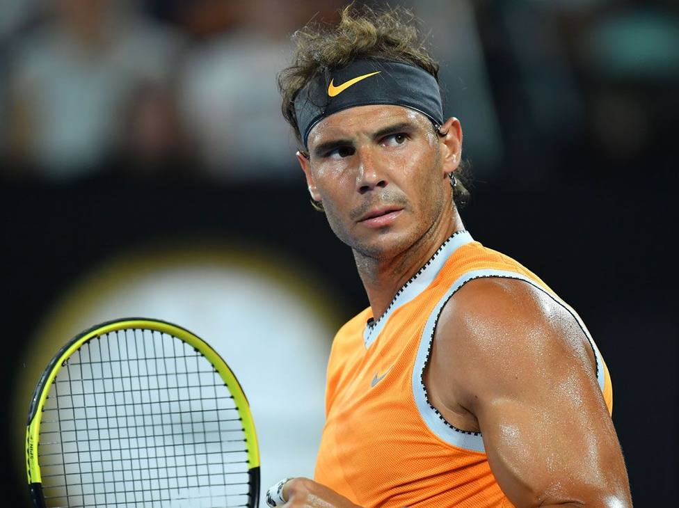

Rafael Nadal Parera

Datos Personales
Fecha de nacimiento: 3 de junio de 1986 (35 años)
Lugar de nacimiento: Manacor, España
Altura: 1,85 metros
Peso: 85 kilos
Entrenador: Carlos Moyá / Francis Roig
Brazo hábil: Zurdo; revés a dos manos
Profesional desde: 2001